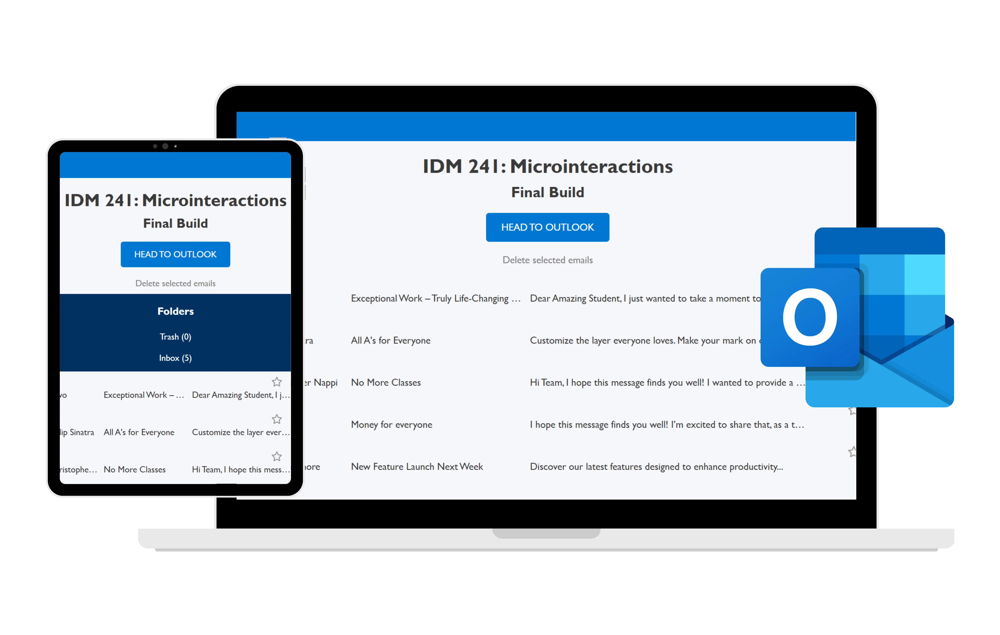

Hello visitor! I'm a digital storyteller passionate about crafting human-centered experiences that connect and inspire.
I believe in the power of storytelling to foster empathy and understanding, especially to amplifying the voices of underrepresented communities.
